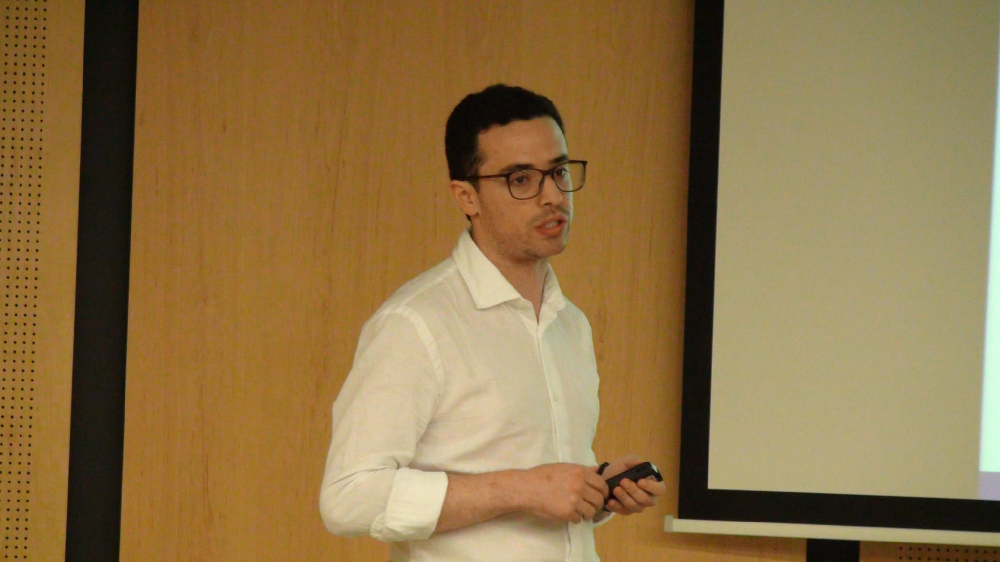

My CV
I hold a Bachelor's Degree in Economics from Universidad de la Salle (Colombia). I received a Master’s degree in Economics from Universidad de los Andes. At Maastricht University and UNU-MERIT (The Netherlands), I studied a graduate program in Public Policy. My research area focuses on the evaluation of public policies, policy implications, and sectoral analysis. Within this area I have been working on two interrelated research streams: - The evaluation of public policies particularly those regarding Innovation and R&D. - Industrial Analysis and implication of R&D and Innovation. As an Economist, I have also been extremely fortunate for having work for the Colombian Government (2011-2013) at the Ministry of information and communication technology (MINTIC). There I led different economic analyses and regulatory proposals for the telecom Industry. I was an adviser at the Telecommunication Industry Bureau. That is why I collaborated with some researchers, doing some pieces of research work on public policies applied to the telecom sector.
Favourite Quoute
In economics, the majority is always wrong. John Kenneth Galbraith